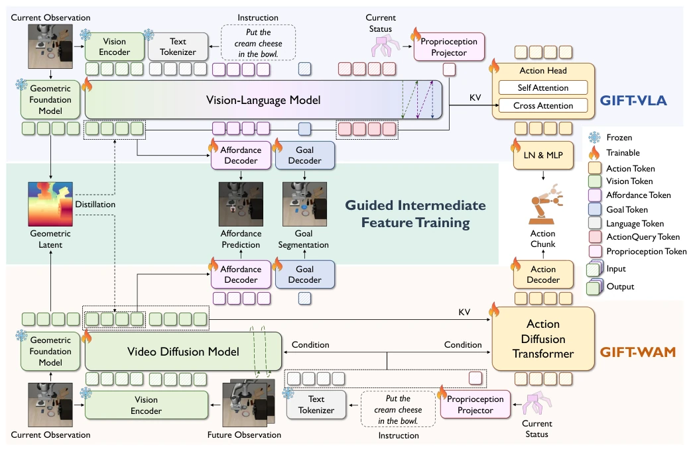
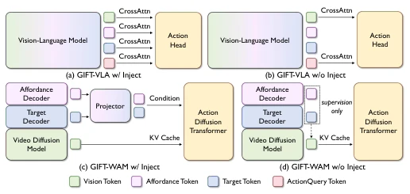
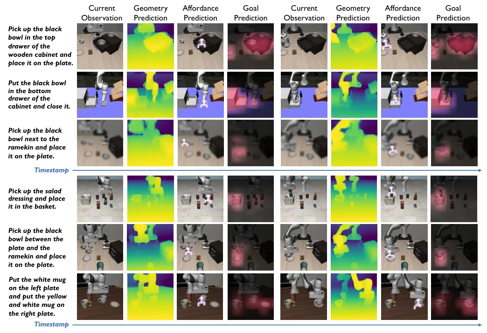
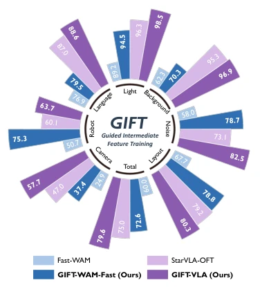
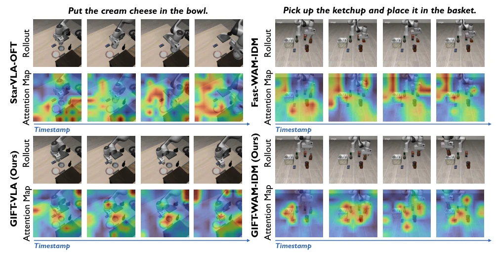
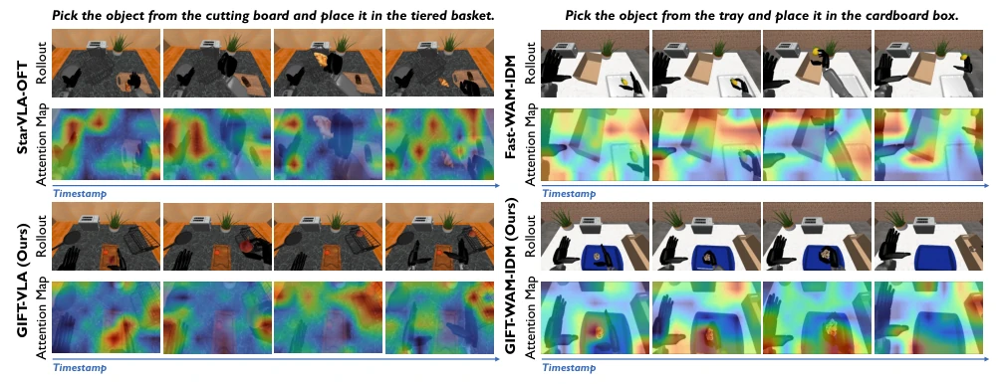
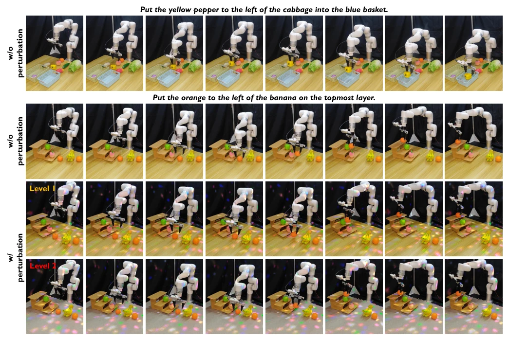
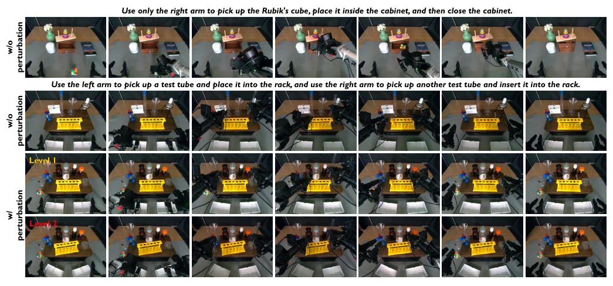
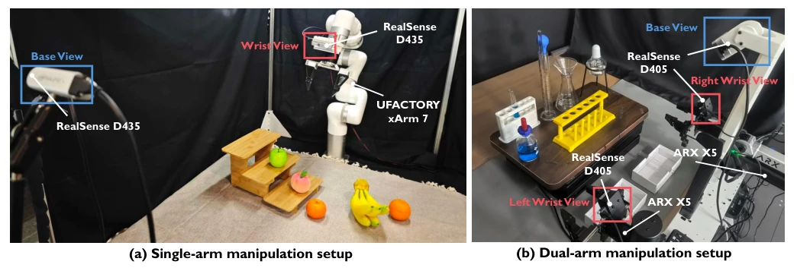

This paper attempts to use 'feature distillation' to solve the 'action-sufficiency gap' in VLA and WAM, with the idea of adding auxiliary supervision of geometry, Affordance, and Goal to intermediate features. The highlight lies in architecture-agnosticism, being generalizable across different policies, with significant zero-shot transfer effects and obvious improvements on LIBERO-Plus. However, the criticisms are: this is essentially multi-task learning, geometry supervision relies on a frozen teacher model, although not used during inference, the training cost is high. Additionally, no-injection being better than injection indicates that feature internalization is more effective than external conditions, but does this imply that the existing action head design itself has redundancy? Experiments are mainly in simulation, although real-world was done, the sample size is small. Overall, it is a solid optimization of feature engineering, but still far from 'general intelligence', and the dependency of the teacher model on data distribution is not explored in depth.
Existing VLA [1][2] and WAM [4][5] strategies, while semantically rich, often contain visual redundancy irrelevant to control in intermediate features, leading to an 'action-sufficiency gap' (action-sufficiency gap). Relying solely on action supervision or pixel reconstruction cannot preserve key structures such as motion feasibility and interaction configurations. Existing methods such as SpatialVLA [10] or DreamVLA [15], although introducing specific supervision, are mostly limited to specific architectures or auxiliary head designs, lacking a unified principle across policies. For example, GuidedVLA [7] relies on dedicated decoding heads, while GIFT aims to improve control utility by structuring intermediate features rather than external conditions, addressing out-of-distribution generalization issues. This mismatch leads to a sharp decline in model performance in out-of-distribution scenarios such as viewpoints and layouts, urgently requiring a feature structuring method that does not rely on extra inference conditions.
GIFT is an architecture-flexible framework that applies three types of supervision on the intermediate visual tokens of the policy encoder. The pipeline is: Input observation and instruction -> Encoder extracts features $Z_t$ -> Parallel three auxiliary heads (Geometry, Affordance, Goal) -> Compute loss, backpropagate, and update the main network. Innovations include: 1) Geometry alignment: Freeze VGGT teacher, align feature direction and magnitude through angle and scale loss, without introducing new modalities; 2) Affordance prediction: Define 20-D interaction targets, encode instruction-related entities and robot arm configurations; 3) Goal region reconstruction: Predict instruction-related binary masks. Supports Injection (feature input to action head) and No-injection (supervision only) designs. Finally instantiated on VLA, WAM-Fast, WAM-IDM, keeping their respective action generation mechanisms unchanged. Geometry loss decomposed into direction and scale components, avoiding feature scale sensitivity; Affordance uses anchored object relative coordinates, reducing global camera dependency; Goal mask provides dense spatial localization. The three supervisions are complementary, ensuring features possess motion feasibility, interaction semantics, and task goal information simultaneously.

Fig. 2: Overview of GIFT. Given the observation, instruction and robot state, GIFT attaches three training objectives to the intermediate visual tokens of a policy: geometry alignment with a frozen geometric foundation model, object-centric affordance prediction, and instruction-conditioned goal-region prediction. The default no-injection design does not route auxiliary predictions into the action pathway; the auxiliary objectives shape the shared intermediate features only through their training gradients. We instantiate the same principle in a VLA (top) and two WAM action formulations (bottom).

Fig. 3: Injection and no-injection variants. With injection, model-predicted affordance and goal features are routed to the model-specific action head during both training and inference. Without injection, the same predictions provide auxiliary supervision only. Geometry remains an alignment- only objective because its scene-level structure is absorbed directly by the visual tokens already entering the model- specific action pathway, whereas the object-level affordance and goal features provide compact auxiliary conditions.

Fig. 4: Visualization of the structured intermediate guidance. Examples from GIFT-VLA (top) and GIFT-WAM-IDM (bottom) show observations together with geometry, affordance, and goal predictions.
Evaluated on LIBERO, LIBERO-Plus, and RoboCasa simulation benchmarks and real robots. Baselines include StarVLA-OFT [49], Fast-WAM [5], etc. Metric is task success rate. Results show GIFT variants significantly outperform baselines in LIBERO-Plus zero-shot transfer (e.g., GIFT-WAM-IDM improves by 5.2%), especially under lighting and layout perturbations. Significant improvement on articulated object tasks on RoboCasa. Ablation shows three supervisions are complementary, and No-injection is better than Injection, proving feature internalization is effective. Real robot experiments verify robustness under unseen visual perturbations. Training uses only original LIBERO data, no fine-tuning. Real robots use xArm7 and ARX X5, introducing perturbations such as rotating lights and background changes. Results indicate GIFT can internalize task structure, improving generalization ability without extra inference overhead.

Fig. 1: GIFT improves zero-shot robustness. GIFT-VLA and GIFT-WAM-Fast consistently outperform StarVLA-OFT and Fast-WAM under seven LIBERO-Plus shifts and on average.

Fig. 5: Visualization of action-to-vision attention maps on LIBERO-Plus. Across the VLA and WAM-IDM examples, GIFT focuses more consistently on manipulated objects and interaction-relevant regions compared with matched baselines.

Fig. 6: Visualization of action-to-vision attention maps on RoboCasa. Under RoboCasa’s distinct humanoid embodiment and household scenes, GIFT still more consistently concentrates attention on task-relevant regions than matched baselines.

Fig. 9: Visualization of real-world manipulation rollouts on the single-arm platform. For robustness evaluation, Level 1 introduces a rotating colored lamp, while Level 2 additionally replaces the tabletop background with a tablecloth of a different color.

Fig. 10: Visualization of real-world manipulation rollouts on the dual-arm platform. Level 1 replaces all background objects with novel objects, while Level 2 additionally rotates the target test tubes and rack by approximately 15◦–20◦
其他图片Other Figures

Fig. 8: Real-world robotic platforms. (a) Single-arm UFACTORY xArm7 setup observed by third-person and wrist- mounted Intel RealSense D435 cameras. (b) Dual-arm ARX X5 setup observed by one head-mounted and two wrist- mounted Intel RealSense D405 cameras. Both systems use parallel grippers.